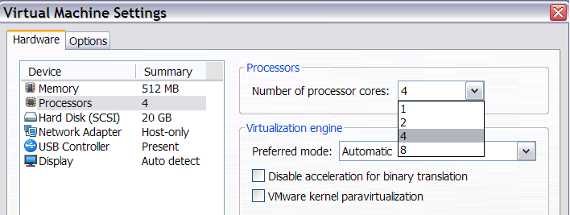
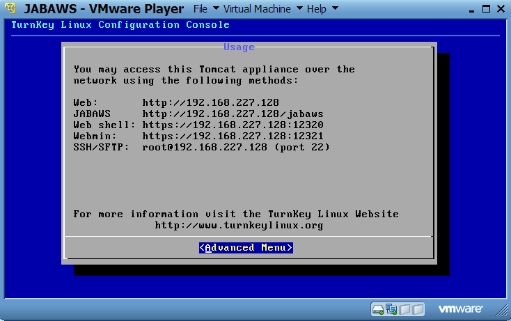
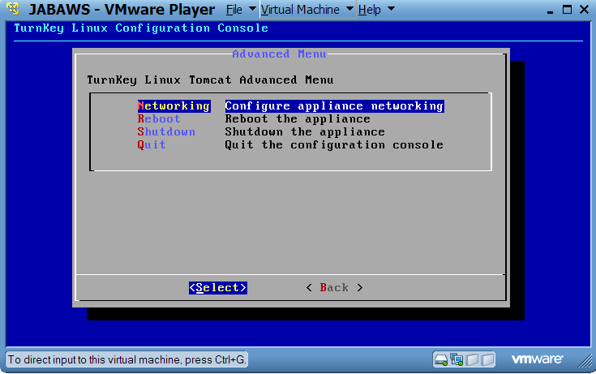

JABAWS MANUAL
JABAWS Server Virtual Appliance
- What is JABAWS Virtual Appliance?
- When to use virtual appliance
- How to install VMware Player
- VMware Player appliance configuration
- JABAWS Appliance details
- Configuring Jalview to work with your JABAWS VM
- VM Network Settings
What is the JABAWS Server Virtual Appliance?
The JABAWS Virtual Appliance is a
way to run JABAWS server locally without the need to connect to the internet or configure JABAWS.
What the appliance provides is a 'virtual server machine' (or more simply - virtual machine or VM), running an installation of the JABAWS
Web Application Archive (WAR) on TurnKey Linux. Once this has started up, it displays a message indicating the IP address of the JABAWS server, allowing any JABAWS client (such as Jalview or the JABAWS command line client) to connect to it.
You can run the appliance with freely available program such as VMware Player, but you will need to install it first. We have tested the JABAWS appliance
with VMware Player v 3.1.2 on Windows and Linux, and VMware Fusion on Mac.
However, you are not limited to these virtualization systems and can use the JABAWS appliance with any other virtualization platform. You can use VMware OVF tool to prepare JABAWS image for a different virtualization platform e.g. VirtualBox.
When to use the JABAWS Virtual Appliance
The appliance best suits users who would like to use the JABA web services locally. This might be because they do not want to access systems over an internet, or just want to keep their data private. It is also the recommended option for users who want to install JABAWS on Windows, which does not support all the bioinformatics programs that JABAWS can run.
When not to use the JABAWS Virtual Appliance
For servers that will be used heavily, we recommend that a JABAWS Server WAR distribution is deployed, rather than the Virtual Appliance version of JABAWS. This is because the JABAWS appliance is pre-configured to use only 1 CPU and 512M of memory (where the minimum amount of memory required for a JABAWS server is about 378M), which is unlikely to be sufficient for heavy computation. It is possible to reconfigure the virtual appliance so it uses more computation resources, but for most production environments, the JABAWS WAR distribution will be easier to deploy and fine tune to take advantage of the available resources.
How to install VMware Player
Please see the VMware Player web sites for up to date instructions and downloads.
VMware Player appliance configuration
The free VMware Player can be used to run the JABAWS services from the Windows and Linux host operating systems. VMware Fusion, a commercial VMware product, offers virtual machine support for Mac.
To run the JABAWS server on VMware player, unpack the JABAWS VM into one of the folders on your local hard drive. Open VMware Player, click "Open Virtual Machine" and point the Player to the location of the JABAWS, then choose the JABAWS.vmx file to open an appliance.
When you play the machine for the first time the Player might ask you whether "This virtual machine may have been moved or copied.", say that you have copied it. That is all.
JABAWS Appliance details
By default, the JABAWS virtual appliance is configured with 512M of memory and 1 CPU, but you are free to change these settings. If you have more than one CPU or CPU core on your computer you can make them available for the JABAWS virtual machine by editing virtual machine settings. Please bear in mind that more CPU power will not make a single calculation go faster, but it will enable the VM to do calculations in parallel. Similarly, you can add more memory to the virtual machine. More memory lets your VM deal with larger tasks, e.g. work with large alignments.
The VMware Player screen shot below displays JABAWS VM CPU settings.

JABAWS appliance configuration:
VMware info
- CPUs : 1
- RAM : 512 MB
- Networking : Host only (the VM has no access to the outside network, nothing from the outside network can access the VM)
- Hard disk : 20 GB (expanding)
- VMware tools : Installed
OS info
- OS : TurnKey Linux, based on Ubuntu 8.0.4 JEOS (Just-Enough-Operation-System)
- Installation : Oracle Java 6, Tomcat 7, JABAWS v. 2.0
- Hostname : tomcat
- IPv4 address : dhcp
- IPv6 address : auto
- DNS name : none
- Name server : dhcp
- Route : dhcp
- Keyboard : US_intl
Login credentials
- Root password: jabaws
Services
- Default virtual console Alt+F7
- Tomcat web server.
Access: http://VM_IP - JABAWS URL: http://VM_IP/jabaws
- Web Shell
Access: https://VM_IP:12320/ - Webmean
Access: https://VM_IP:12321/ - SSH/SFTP
Access: root@VM_IP
Where VM_IP is the VM IP address. Under VMware Player host only networking, the first VM may have 192.168.227.128 IP address.
Configuring Jalview to work with your JABAWS VM
After booting the JABAWS VM, you should see similar screen, however, the IP address of your VM may be different. To enable Jalview to work with your JABAWS appliance you need to go to Jalview->Tools->Preferences->Web Services -> New Service URL, and add JABAWS URL into the box provided. For more information please refer to Jalview help pages.

If you click on Advanced Menu, you will see the configuration console, similar to the one below.

If you need to configure a static IP address the configuration console will help you with this. Shutting down the VM is best from the configuration console as well.
VM Network Settings
By default the JABAWS VM is configured to use host-only networking. This means that the host can communicate with the VM via a network, but no other machines can. Similarly, the VM cannot communicate with any other computers apart from the host. If you want to connect to the Internet from the VM, configure your VM to use NAT network. However, you will not be able to connect to the VM from the host in such case. If you want to be able to connect to your VM and let VM connect to the internet at the same time you would have to use a Bridged network. In such a case you would have to configure the VM IP address manually (unless of course your network has a DHCP server to do that)